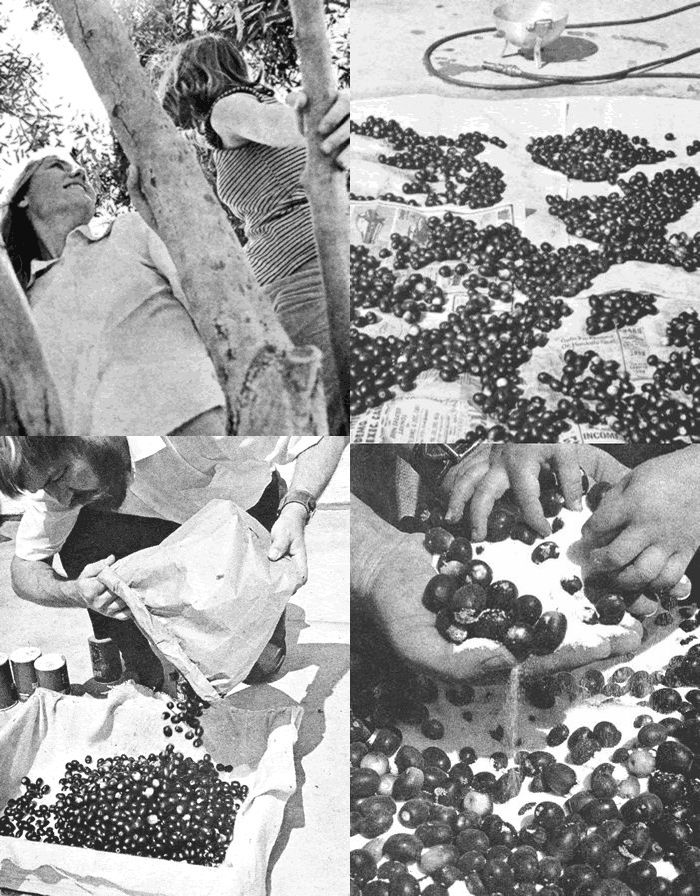
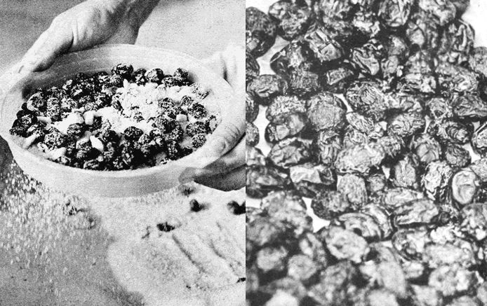

One of the first things I noticed when I moved into my apartment here in Chula Vista, California-a few miles south of San Diego-was the fine old olive trees growing among the landscaped shrubbery and lawns of the neighborhood.
"They're Mission olives," an old-time resident of the city told me, "refugees from one of the many groves in this area that have been ripped up and replaced by suburban developments."
Olive trees, however-which have a very long life-don't stop producing fruit just because they've become mere decorations. Literally tons of olives go to waste in southern California every year! Part of the crop, of course, is consumed by starlings, one of the few birds that will eat the bitter berries. The lush oval fruit also makes super ammunition for the slingshot set (the ripe ones find their target with a satisfying purple splat).
Few people try to harvest the olives, because they have a dreadful taste fresh off the tree and must be processed in one of several complicated ways. So most people just rake them up and throw them away then pick up a can of the "readymade" fruit at the supermarket.
Because I'm a frustrated farmer who wants to produce something other than crab grass in his mini-yard, I decided to try harvesting the luscious black olives hanging heavy from the dozen or so trees near my apartment.
A little research into the art and science of preserving olives, however, produced one clear message: Forget it! The juicy black ones you buy in a can at the supermarket, I learned, started their processing before they were ripe. And, anyway, I didn't have room in my pad for all the necessary crocks and vats.
Then I learned about Greek olives! You probably won't find the delicacies in your grocery (I've only seen them in a few specialized restaurants and delicatessens, and at very high prices), and they're probably best classified as "an acquired taste" for some people. But the shriveled, slightly bitter "Greek cures" can be made from already-ripe fruit.
The curing process is also easy, and the cost is next to nothing when the olives are free.So, if you live in southern California-or in any other semitropical area where olive trees are grown just for their craggy beauty you may want to try my method of harvesting and preserving their fruit.
You'll need a wooden box about six inches deep-the kind that fruits and vegetables are often shipped in-that you can probably get free at the local produce market. You'll also have to round up a piece of burlap cloth big enough to cover the inside bottom and sides of the container. Use clean, new burlap if possible-enough to do the job will cost you less than a dollar at the local dry goods store-and bring the material up the sides and tack it along the top edges, so the olives won't fall through the open slots in the sides and bottom.
After your curing box is ready, you'll want to lay in a good supply of salt about three-fourths as much, by weight, as the amount of olives you plan to cure.
Ali, yes the olives. Gathering them may be a slight problem if climbing trees isn't one of your favorite sports. I solved that small dilemma by gathering up a few bottles of coke, a portable radio for playing rock music, and some idle teenagers who were attracted by the novelty of an olive-picking party. Anyway, it worked the first time!
One final note on the harvest: Although the fruit shown in the accompanying photos are the common Mission olives, the variety traditionally cured, any "brand" will do. Just concentrate on picking the smaller ripe fruit as the larger ones get soft.
An initial washing in a kitchen colander will probably be needed to remove dust and evidence of birds that frequent the trees. Take the strainer outside, load it with fruit, set the filled container on the patio or driveway, and flush the colander's contents good with the garden hose. Then lay newspapers on the grass and spread the wet fruit out to dry.
Of course, all this could be done in the kitchen, but it's surprising how much space the olives require, and you always seem to have more of the fruit at this point than you thought you had picked.
After the olives have dried, weigh them and then mix one pound of salt with each two pounds of olives. Pour the mixture into the wooden box with the burlap lining and spread a layer of salt one inch deep over the top. The box should be placed outdoors so that any brine which runs off won't ruin your floor (but be sure to keep the container under a shelter in case of rain).
Allow the olives to cure for a week, pour them into a second box and then back into the original burlap-lined box again. This mixing procedure should be repeated once every three days until the olives are cured and edible (it usually takes 30 to 35 days). Along the way, pick out any individual specimens that become soft or get broken open.
After a month-when the fruit will have become well shriveled-separate out the salt with a kitchen strainer or that plastic sand sifter the kids use at the beach.
The colander is then used again to dip the olives for a few seconds into boiling water. After they've drained, let them dry overnight in, say, cookie sheets lined with paper towels.
Once the fruit is thoroughly dry, mix about a pound of salt into each 10 pounds of olives and store your processed harvest in a cool place. The olives will keep this way for about a month, but if you want to store them for longer periods, put them in your refrigerator or freezer.
If you're into Greek, Italian, and Spanish cooking, you'll find dozens of ways to eat your olives. They're especially delicious, for instance, in tamale pie and spaghetti and my favorite use for them is as a relish.
To prepare cured olives as a relish, just sprinkle the fruit with olive oil and mix thoroughly until each one is completely coated with oil. That's it! And no coating of oil is needed at all to make the processed olives ready for tamale pie, spaghetti, and other cooked dishes.
So. If you live in an olive-growing region, quit missing out on a good bet. Instead of raking up all those messy ripe olives, pick them before they fall, spend two dollars and a little time, and process yourself ten pounds of Greek-cured olives.
And believe me: that quantity of the delicacies would cost you a bundle at the delicatessen. And when you proudly serve yours to your friends, the fruit will be worth twice as much because you cured it yourself.
|
TOP LEFT: Picking olives is great sport for young and adult tree climbers alike. TOP RIGHT: The harvested fruit is first thoroughly washed, then spread on newspapers to dry. BOTTOM LEFT : Olives and salt are added to the burlap-lined box in 2 to 1 ( By weight, respectively) proportions. BOTTOM RIGHT: The Ingredients are mixed thoroughly, allowed to cure for a week, then remixed every days for 30 to 35 days. Be sure to discard any broken or softened specimens |
 LEFT: When the olives have shriveled, the salt is separated from the cured fruit by using a kitchen strainer or plastic sand sifter, and the edibles - still in the colander - are then dipped into boiling water for a few seconds and allowed to dry over-night RIGHT : Voila ! The finished product ain't much to look at, but will provide plenty of mighty tasty eating over the months to come. Your olives will lend zest to foods, or will make great relish. And it sure beats paing high supemarket prices! |
 |